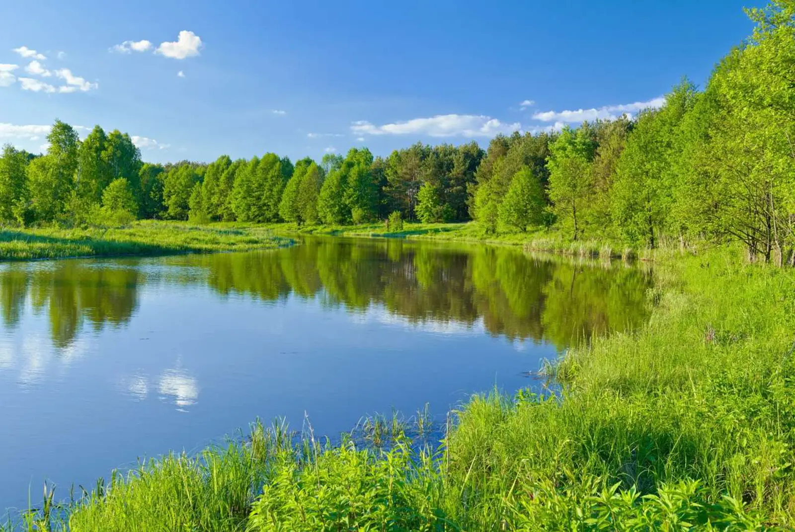

Szlak przez najdzikszą rzekę Polski. Wsie, cerkwie i nadbużańskie krajobrazy. Slow travel po Dolinie Bugu — jednym z najdzikszych zakątków wschodniej Polski.
Dlaczego Dolina Bugu inaczej
Dolina Bugu to szlak rowerowy, który biegnie wzdłuż najdzikszej rzeki w Polsce — Bugu. Rzeka ta przez wieki stanowiła naturalną granicę, a dziś jest jednym z ostatnich w Europie siedlisk ptaków wodno-błotnych i jedną z najbardziej nieuregulowanych rzek na kontynencie. Bug nie ma zapór, regulacji ani przemysłu — płynie tak, jak płynął przed wiekami.
Slow travel po Dolinie Bugu to podróż przez krajobraz, który niewiele zmienił się od stu lat. Trasa prowadzi przez wsie, cerkwie, drewniane chaty, łąki nadbużańskie — wszystko to tworzy krajobraz, który jest jednym z ostatnich prawdziwie wiejskich w Polsce. To trasa dla tych, którzy szukają kontaktu z dziką przyrodą i prawdziwej wiejskiej Polski. Zamiast pędzić przez region samochodem, warto przejechać go rowerem — wtedy tempo jest naturalne, a krajobraz można naprawdę zobaczyć.
Co zobaczyć
Dolina Bugu dzieli się na kilka części: północną (okolice Drohiczyna i Mielnika), środkową (okolice Janowa Podlaskiego) i południową (okolice Włodawy i Hrubieszowa). Do zwiedzania najlepiej poświęcić 3–4 dni.
Drohiczyn, Mielnik i północ
- Drohiczyn — miasteczko z barokowym klasztorem i katedrą, na wysokim brzegu Bugu. Warto dla architektury i widoków.
- Mielnik — wieś z kredowym wzgórzem i punktem widokowym na Bug. Warto dla widoków i spaceru.
- Góra Zamkowa w Mielniku — wzgórze z ruinami zamku, z panoramą na Bug. Warto dla historii.
- Ośrodek Jazdy Konnej w Mielniku — warto dla miłośników koni.
- Sanktuarium w Grabarcę — sanktuarium maryjne z cudownym obrazem, ~10 km od Mielnika.
Janów Podlaski i środkowa część
- Janów Podlaski — wieś ze słynną stadniną koni arabskich, jedną z najstarszych w Europie. Warto dla miłośników koni.
- Stadnina Koni w Janowie Podlaskim — hodowla koni arabskich, z możliwością zwiedzania. Warto dla unikalnego doświadczenia.
- Pratulin — wieś przy granicy z Białorusią, z sanktuarium i pomnikiem Unii Brzeskiej. Warto dla historii.
- Kodeń — miasteczko z sanktuarium maryjnym i kalwarią. Warto dla architektury i sacrum.
- Konstantynów — miasteczko z barokowym kościołem i klasztorem. Warto dla architektury.
Włodawa i południe
- Włodawa — miasteczko z barokową synagogą i cerkwią, jedno z najciekawszych miejsc w regionie. Warto dla historii i architektury.
- Synagoga we Włodawie — barokowa synagoga z XVII wieku, dziś muzeum. Warto dla dziedzictwa żydowskiego.
- Cerkiew we Włodawie — barokowa cerkiew prawosławna, jeden z symboli miasta.
- Hrubieszów — miasto nad Huczwą, z cerkwią i rynkiem. Warto dla spaceru.
- Zosin — wioska przy granicy z Ukrainą, na skraju Doliny Bugu. Warto dla historii i widoków.
Kiedy jechać
- Maj i czerwiec — najlepszy czas dla slow travel. Zielone łąki, mniej turystów, dni długie. Warto na rower.
- Wrzesień i październik — drugi najlepszy okres. Kolory jesieni nad Bugiem, przejrzyste powietrze, mniej ludzi.
- Lipiec i sierpień — szczyt sezonu. Trasa jest zatłoczona, ale wszystkie atrakcje działają. Warto dla spływu kajakowego.
- Listopad–marzec — zima nad Bugiem jest cicha i surowa. Warto dla tych, którzy szukają samotności.
Jak dotrzeć
- Samochodem: z Warszawy ~2 godziny (S8 i DK62), z Lublina ~2 godziny (DK82), z Białegostoku ~2 godziny (DK19 i DK62).
- Pociągiem: stacja w Siedlcach lub Białej Podlaskiej (~40 km od Doliny Bugu), z połączeniami z Warszawy (~1,5 godziny), Lublina (~2 godziny).
- Autobusem: PKS i przewoźnicy prywatni z Warszawy, Lublina, Siedlec.
Komunikacja publiczna w regionie jest słaba — samochód lub rower znacznie ułatwiają poruszanie się. Trasa rowerowa wzdłuż Bugu jest dobrze oznakowana.
Ile czasu potrzebujesz
Weekend (2 dni) to minimum — jeden dzień rowerem wzdłuż Bugu, drugi na spacer po Drohiczynie i Mielniku.
Trzy–cztery dni to realny czas na pierwszy wyjazd. Dwa dni rowerem, jeden dzień Włodawa i okolice, jeden dzień Janów Podlaski lub Kodeń.
Tydzień pozwala przejechać całą Dolinę Bugu — od Drohiczyna do Hrubieszowa, z licznymi przystankami.
Co zjeść i gdzie spać
- Kuchnia podlaska — kibiny, kartacze, babka ziemniaczana. Warto w lokalnych gospodach.
- Ryby z Bugu — szczupak, leszcz, sandacz. Wędzone lub smażone.
- Pierogi z kaszą gryczaną — regionalna wersja, popularna na Podlasiu.
- Piwo z lokalnego browaru — kilka rzemieślniczych browarów w regionie.
- Kawa i ciastka — w Drohiczynie i Włodawie jest kilka dobrych kawiarni.
- Sery korycinskie — wędzone i dojrzewające, dostępne w lokalnych sklepach.
Bazy noclegowe: Drohiczyn (miasteczko, mniejszy wybór), Janów Podlaski (wieś, cisza), Włodawa (miasto, więcej opcji), Mielnik (wieś, blisko Bugu), agroturystyki w wioskach wzdłuż Bugu (cisza, taniej).
Praktyczne wskazówki
- Rower — trasa rowerowa wzdłuż Bugu jest dobrze oznakowana. Warto wypożyczyć rower w Drohiczynie lub Janowie Podlaskim.
- Rezerwacje — pola biwakowe i agroturystyki wzdłuż Bugu warto zarezerwować z wyprzedzeniem w sezonie letnim.
- Pogoda — pogoda w regionie bywa zmienna. Nawet w lipcu warto mieć kurtkę przeciwdeszczową.
- Komary i kleszcze — łąki nadbużańskie to raj dla komarów i kleszczy. Repelent i moskitiera — obowiązkowe.
- Granica — Dolina Bugu leży przy granicy z Białorusią i Ukrainą. Warto mieć przy sobie dokument tożsamości.
- Zasięg — dobry w miastach, słabszy w wioskach nad Bugiem. Warto mieć offline mapę.
- Paliwo i zakupy — stacje benzynowe w Drohiczynie, Janowie Podlaskim, Włodawie. W mniejszych wioskach sklepy bywają słabo zaopatrzone.